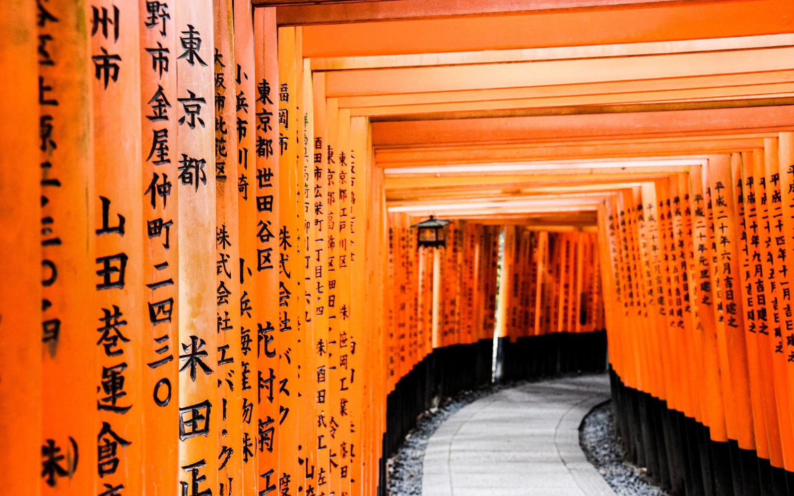
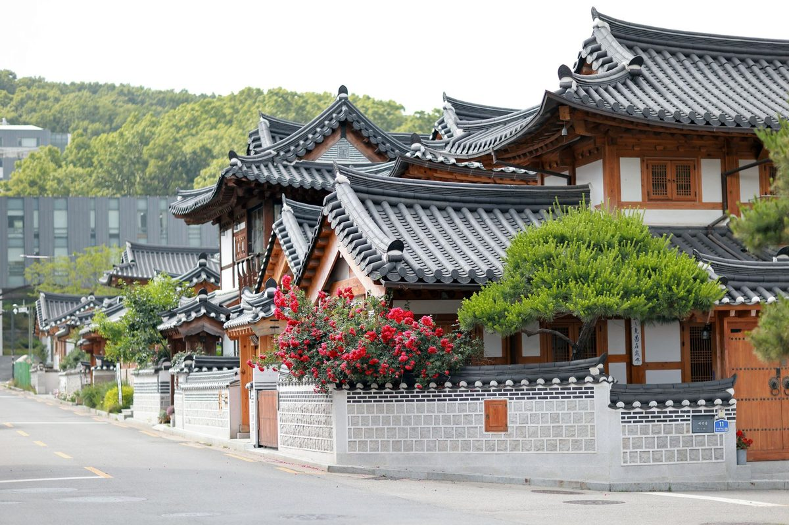

TRAVEL TASTE QUIZ · 13개 도시
1분이면, 내 여행지가 나옵니다
예산·일정·동행·분위기·이동 거리 다섯 가지만 고르면, 트립픽이 정리한 13개 도시(해외 7·국내 6) 중 지금 조건에 가장 가까운 곳을 골라 드립니다. 결과는 그 도시의 투어·맛집·숙소 페이지로 바로 이어집니다.
1 / 5
답을 고르면 바로 다음 질문으로 넘어갑니다.
이렇게 고릅니다 — 질문 5개
1. 1인 예산은 얼마쯤 생각하세요?2. 며칠 다녀오실 수 있어요?3. 누구와 함께 가나요?4. 끌리는 분위기는요?5. 비행 시간은 어디까지 괜찮아요?
추천은 트립픽이 정리한 13개 도시의 실제 상품 가격·식비·이동 시간을 점수로 환산한 결과입니다. 1~3점 차이로 순위가 바뀌는 경우가 많으니 2·3순위도 같이 보고, 날짜를 넣어 실제 금액을 확인하세요.
13개 도시 — 퀴즈 없이 바로 보기

해외 · 먹거리 중심 첫 해외여행오사카·교토 해외 · 도시·문화를 오래 보는 여행도쿄
해외 · 도시·문화를 오래 보는 여행도쿄 해외 · 짧게 다녀오는 해외 먹거리후쿠오카·규슈
해외 · 짧게 다녀오는 해외 먹거리후쿠오카·규슈 해외 · 바다+가성비 첫 동남아다낭·호이안
해외 · 바다+가성비 첫 동남아다낭·호이안 해외 · 리조트에서 쉬는 휴양나트랑·달랏
해외 · 리조트에서 쉬는 휴양나트랑·달랏 해외 · 친구와 먹고 마시는 도시방콕
해외 · 친구와 먹고 마시는 도시방콕 해외 · 짧고 알찬 도시+온천타이베이
해외 · 짧고 알찬 도시+온천타이베이 국내 · 아이와 차로 도는 국내여행제주
국내 · 아이와 차로 도는 국내여행제주
국내 · 하루 네 끼 먹으러 가는 당일치기서울 국내 · 바다+야경을 하루에부산
국내 · 바다+야경을 하루에부산 국내 · 겨울 바다와 스키를 같이강릉·평창
국내 · 겨울 바다와 스키를 같이강릉·평창 국내 · 게장 먹고 밤바다 걷기여수
국내 · 게장 먹고 밤바다 걷기여수 국내 · 걸어서 보는 역사·야경경주
국내 · 걸어서 보는 역사·야경경주퀴즈에 대해 자주 묻는 질문
Q. 이 퀴즈는 무엇으로 추천하나요?
트립픽이 정리한 13개 도시의 실제 상품 가격(2026-11-20 확인), 현지 식비, 이동 시간을 예산·일정·동행·분위기·비행시간 다섯 가지에 점수로 환산해 가장 가까운 곳을 고릅니다.
Q. 결과가 마음에 안 들면요?
2·3순위 도시도 함께 보여드립니다. 1~3점 차이로 순위가 바뀌는 경우가 많아, 조건을 하나씩 바꿔 다시 해보시면 다른 후보가 나옵니다.
Q. 선택한 답이 저장되나요?
퀴즈 결과는 이 브라우저(localStorage)에만 저장되고 서버로 보내지 않습니다. 홈의 ‘내 여행 준비’에서 다시 열 수 있고, 다른 기기와는 공유되지 않습니다.